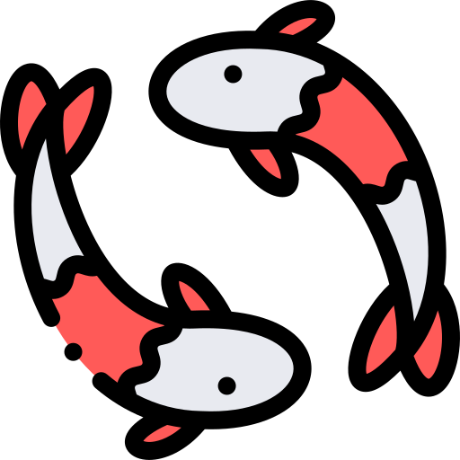

6학년 스타트업
우리가 직접 만든 서비스예요. 눌러서 써 보세요!
🗺️ 코리아, 지도의 민족
지도에서 가는 길을 찾아 주는 서비스
만든 사람: 김건하, 임유빈, 전효성
💬 message
친구와 이야기를 나누는 서비스
만든 사람: 이준영, 오현송, 홍현도

잉스타사진을 올리고 함께 보는 서비스
만든 사람: 김아정, 박선유, 오유나, 여이레
🧳 4학년 여행 코스
친구가 추천하는 여행 코스를 지도로 보는 서비스
🏝️ 바다 이야기
섬과 바다 생물, 어업 도구 사진·영상을 모으고 찍은 곳을 지도에 보여 주는 서비스 (만드는 중)
 씨그널
씨그널
바닷가의 수온, 파도, 물때를 보고 수영해도 되는지, 낚시해도 되는 곳인지 알려 주는 서비스 (만드는 중)
⚓ dockmap
땅을 피해 가는 바닷길, 기름값, 수심, 내 배 위치, 배 댈 곳의 자리와 리뷰를 알려 주는 서비스 (만드는 중)